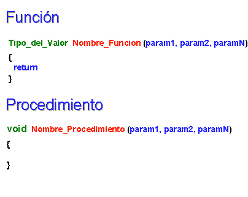

Objetivos:
- Que apliques los conocimientos sobre funciones y procedimientos, para
experimentar las ventajas de la programación modular, como la
reutilización de código
- Que ejercites la habilidad de hacer frente a los mensajes de error
que envía la herramienta de desarrollo

Forma de
trabajo:
Actividad grupal

Tiempo
estimado:
90 minutos

Instrucciones:
Utiliza el siguiente esquema como apoyo para desarrollar tu
laboratorio:

Ejercicio 1.
Implementa las siguientes funciones,
recuerda que las funciones y procedimientos se definen antes de la
codificación del main().
- La función piesMetros, que recibe una cantidad en pies y regresa su equivalencia en
metros. El encabezado de la función, podría ser el siguiente:
float piesMetros (float pies)
{
}
- La función
metrosPies, que recibe una cantidad en metros y regresa su equivalencia
en pies. El
encabezado de
la función,
podría ser el
siguiente:
float metrosPies (float metros)
{
}
La relación de conversión entres estas dos unidades de longitud es:
1 ft = 0.3048 mts.
- El procedimiento
unidadesLongitud, que despliegue el siguiente menú en pantalla:
UNIDADES DE LONGITUD
1. Pies - Metros
2. Metros - Pies
3. Salir
-
En la sección del "main()" construya un programa
completo en C que utilice el procedimiento unidadesLongitud
para desplegar el menú correspondiente y de acuerdo a la opción
seleccionada por el usuario utiliza la función apropiada de las
implementadas anteriormente, para calcular la equivalencias de las
unidades de longitud.
Utiliza el estatuto de control Switch.
-
Recuerda que la captura de datos y validación de valores debe ser
realizada en la sección del "main ( )", pues las funciones NO
pueden realizar las tareas de validación o captura de datos.
-
Guardar esta sección con el nombre: D1_Matricula.c
Ejercicio 2.
En otro archivo, implemente las
siguientes funciones:
-
La función gradosRadianes, que recibe una cantidad en grados y regresa su equivalencia
en radianes.
El encabezado de la función, podría ser el siguiente:
float gradosRadianes (int grados)
{
}
- La función
cosecante, que recibe un ángulo en grados y regresa la cosecante de
dicho ángulo.

El encabezado de la función, podría ser el siguiente:
float cosecante (int grados)
{
}
Utiliza la función sin(x) de la librería
math.h, que calcula el seno del ángulo x especificado en
radianes, por lo tanto, para poder usar esta función, es necesario
primero transformar el ángulo en grados a radianes, para ello utiliza
la función gradosRadianes implementada anteriormente. Como
puedes ver, es posible utilizar una función dentro de otra función. La
única condición que demanda el compilador, es que la función a
utilizar dentro, haya sido definida anteriormente.
.
-
La función secante, que recibe un ángulo en grados y regresa la secante de dicho
ángulo.

El encabezado de la función, podría ser el siguiente:
float secante (int grados)
{
}
.
Utiliza la función cos(x) de la librería
math.h, que calcula el coseno del ángulo x especificado en
radianes, por lo tanto para poder usar esta función, es
necesario primero transformar el ángulo en grados a radianes
como en la función anterior.
-
El procedimiento identidades, que despliegue el siguiente menú
en pantalla:
IDENTIDADES TRIGONOMETRICAS
1. Cosecante
2. Secante
3. Salir
-
En la sección del "main()" construya un programa
completo en C que utilice el procedimiento identidades y de
acuerdo a la opción seleccionada por el usuario utilice la función
apropiada de las implementadas anteriormente, para calcular la identidad
trigonométrica elegida. Utiliza el estatuto de control Switch.
-
Guardar esta sección con el nombre:
D2_Matricula.c

Especificaciones de entrega:
- Formato de entrega: c
- Nombre de los
entregables: D1_matrícula.c y D2_matrícula.c
- Medio de entrega:
Se entrega en Canvas en la sección de Laboratorio:
Funciones
Instrucciones para enviar tus archivos por Canvas:
- Haz clic en la actividad de
Laboratorio: Funciones
- Haz clic en el botón de
Entregar tarea.
- En el fólder de Carga
del archivo, haz clic en el botón de Examinar
y localiza el archivo *.py. Si necesitas agregar más
archivos, haz clic en +Agregue otro archivo, haz
clic en el botón de Examinar y localiza el otro
archivo *.py.
- Cuando hayas terminado de
subir tus archivos, haz clic en el botón de Entregar
tarea y listo!!
- Al indicar que ha subido exitosamente hacer clic en
OK.
|